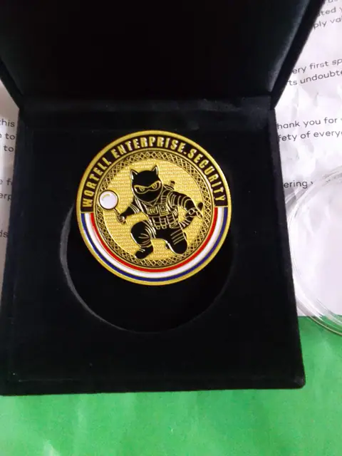
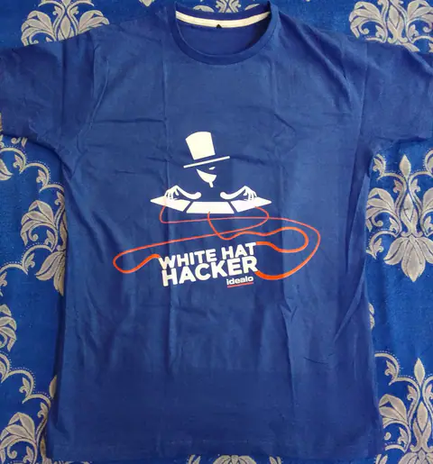
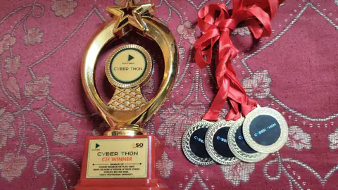

Open to security roles and pentest work
Parth Narula Security researcher and penetration tester
I find the access control, logic and API bugs that scanners miss. 450+ organizations have fixed what I reported, and on 45 Halls of Fame mine is the very first name.
01Record
The numbers, with receipts
Each number links to where you can check it yourself.
Why 361 and not 450+?
Not every thank you is mine to publish. The difference is real, reported and fixed work that I can't put my name next to in public yet.
219 of the listed organizations link to a public page or a screenshot right here. Ask me about any of the others.
Check the full list- Sub companies and clients of a listed group, credited under the parent's name
- Private programs and pentest engagements under NDA
- Programs that haven't approved public disclosure yet
- Reports already confirmed, waiting for the Hall of Fame to update
02Scope
What I test
Five surfaces, one question every time: where does this system trust something it shouldn't?
Broken access control, business logic and authentication. The bugs that need someone to understand how the app is supposed to work first.
- IDOR and privilege escalation
- Business logic and race conditions
- OTP, password reset and session flaws
- XSS chains to account takeover
- Price and checkout manipulation
- SSRF and open redirects
REST and GraphQL, tested request by request. Most of the serious bugs I find live in endpoints the interface never calls the way an attacker would.
- BOLA and broken function level authorization
- Mass assignment
- Excessive data exposure
- Rate limits and enumeration
- GraphQL introspection and batching
- Verbose errors and stack traces
The app and the API behind it. I take the APK apart, then watch every request it makes once pinning is out of the way.
- Exported activities, services and deep links
- Insecure local storage
- Hardcoded keys and secrets
- WebView and intent issues
- Certificate pinning bypass
- Backend APIs the app hides
Where it shows up
Bug bounty programs, CTFs and client pentests. Client reports stay with the client, and public writeups are on the way.
Chatbots, copilots and agents. Same mindset, newer ground: the model is just another component that trusts input it shouldn't.
- Direct and indirect prompt injection
- System prompt leaks
- Data exfiltration through tools
- Insecure output handling
- Jailbreaks and guardrail bypass
- Cross user data leaks
Cloud and infrastructure, found the way an attacker finds them: recon at scale, then the one panel or bucket that should never have been public.
- Recon with dorks and ZoomEye
- Exposed admin and remote access panels
- Open storage buckets
- Leaked keys in JS and repos
- SSRF to metadata services
- Subdomain takeover
Certified eWPTX v3CEH v13eJPT v2APIsec ACP Details
03Case files
Reported, fixed, written up
Eight findings that are fixed and public. Replay any of them step by step. Targets stay redacted unless the program allows naming them.
Every step, in text
The replay above is the same content. This is here so it works without JavaScript, and so you can read it all at once.
Recon to shell access at Nokia6 steps
-
01Dork for the panel
I was hunting a private program and searched for exposed Apache Guacamole instances. A few queries later a live login panel answered on a Nokia subdomain, on a non standard port.
https://sub.sub.nokia.com:port/guacamole -
02Try the default pair
Nothing about the page looked vulnerable. It never does. Guacamole ships with one well known account, and on a production instance it still worked.
Username: guacadmin Password: guacadmin -
03Read the connection list
The dashboard opened as the admin account. No MFA, no rate limiting. Two folders held the whole internal map: SSH and RDP connections, backend and frontend systems, jumphosts.
NonProd/ PROD/ jumphost, backend, frontend, RDP hosts -
04Measure the blast radius
History held real usernames, session lengths, internal IP addresses and timestamps. The user list ran to dozens of nokia.com accounts, and the groups were split by Dev, non_prod and infra_access with per connection read, update and delete rights.
-
05Open a production shell
Clicking a PROD jumphost opened a terminal in the browser, already logged in. A single command confirmed it was a real production filesystem. That turned an admin panel takeover into remote shell access on internal infrastructure.
$ ls -
06Report and close
Everything stopped there and went into the report: how it was found, what it reached, and the fix. One unchanged default credential pair was the whole chain. Nokia fixed it and credited me in their Hall of Fame.
85,000+ emails, one URL away6 steps
-
01Sign up and look at the URL
Signing up redirected me to the usual confirm your email page. The address carried a plain numeric user ID.
/user/checkEmail/61250 -
02Subtract one
I changed the ID by one. The page did not break. It rendered another user's confirmation page, with their email address on it.
/user/checkEmail/61249 -
03Measure it
The IDs were sequential, no login was needed, and nothing rate limited the requests. Administrative addresses showed up in the same range. That alone reached past 60,000 users.
-
04Find the same bug wearing a different hat
On an unrelated platform a profile link led to a printable page that answered page not found. The breadcrumb above the error still printed the account's email address.
Home > myemail@example.com > Page not found -
05Walk the range again
Decrementing that ID leaked addresses the same way, about 25,000 more. An error page is still a page: the template rendered the record before deciding it had nothing to show.
/user/26720/printable -> /user/26719/printable -
06Report both
Both went to their owners with the steps, the ranges I touched and nothing kept. Both were fixed. Authentication is not authorization, and a 404 can still hand over the data.
The invite token that came back in the response6 steps
-
01Use the feature as intended
As the owner of a team I could invite agents by email. One endpoint handled everything, so the whole flow was a single mutation.
POST /graphql {"operationName":"InviteAgents", "variables":{"emails":["victim@example.com"]}} -
02Read the response, not the screen
The invite succeeded, as expected. The response also carried an id for the invitation, which is where it stopped being routine.
{"inviteAgents":{"success":true, "invitations":[{"id":"4ffacc07...", "email":"victim@example.com"}]}} -
03Recognize the shape
I had invited myself earlier, so I knew what an activation link looked like. Everything before the token was fixed. Only the token changed.
/signup/activate/<token> -
04Paste the token from the API
Dropping the id from the response into that path opened the activation page for an address I did not control. No mailbox, no link, no second check.
/signup/activate/4ffacc07... -
05Finish someone else's signup
The form asked for a name and a password. I set both and submitted. The account was created and appeared as an active agent on the team, under the name I chose.
-
06Report it
The chain was short: an identifier that could change account state was returned to whoever asked, and every step downstream trusted it. Reported with the mutation and the response, and fixed.
One extra field, a whole account6 steps
-
01Save the profile, watch the request
Updating my profile sent a plain PUT with the fields the form owns: name, address, phone. Changing the account email was disabled in the interface.
PUT /api/users/profile {"about":{"givenName":"..."}, "contact":{"postalCode":"...", "mobile":"..."}} -
02Read what comes back
The response returned the whole user object, including fields I never touched. The account email sat inside the same contact object I was allowed to edit, next to a confirmed flag.
201 Created {"contact":{"email":"me@example.com", "confirmed":true, ...}} -
03Send the field the form will not
So I added email to the object I was already permitted to change, and left everything else identical.
PUT /api/users/profile {"contact":{ ..., "email":"attacker@example.com"}} -
04Watch it stick
201 again. The response carried the new address, still marked confirmed. No verification mail, no OTP, no link. Reloading the profile showed the swap had really happened.
{"contact":{"email":"attacker@example.com", "confirmed":true}} -
05Push on the impact
Pointing the field at an address that already had an account corrupted that account instead: the owner was locked out, and a password reset did not bring them back. That moved it from a settings bug to account takeover.
-
06Report it
Reported with both requests and the lockout case. The interface saying a field is read only means nothing; the API is what decides.
One code verified the wrong phone number6 steps
-
01Meet the gate
No dashboard until a phone number was verified, and the country dropdown did not list mine. The interface was stating a rule.
POST /api/customer/phone_numbers {"number":"+54..."} -
02Ask who enforces it
I filled the form with an allowed country, then changed only that one value in the request to a number in the blocked country. Same token, same headers, same method.
{"number":"+91..."} -
03The backend never knew
201 Created. A second verification resource with its own id, and the code arrived on the blocked number. The restriction existed only in the dropdown.
-
04Swap the resource
Now two resources existed, each with its own id. I sent the code that belonged to the second one, against the id of the first.
Code issued for resource B submitted against resource A -
05Watch it pass
200 OK. The server never checked that the code belonged to the resource in the URL, only that it was a valid code for my account. Onboarding moved to the next step, satisfied by a number that was never verified.
HTTP/2 200 OK -
06Report it
Two weaknesses, neither critical alone: client side rules with nothing behind them, and a one time code treated as an account wide token. The program did not patch the endpoint. They removed phone verification from onboarding and rebuilt sign in around email.
The self XSS everyone closes6 steps
-
01Test the name field
Signup had an artist name field. Names get reused everywhere, so it is always worth a probe. A basic HTML payload went in.
"'<h1>test</h1> -
02Find the first crack
The confirmation email rendered the HTML instead of escaping it. Only HTML injection in an email, but it proved the value was being trusted in at least one template.
-
03Escalate in place
In profile settings I replaced it with a script payload. It executed when I opened my own settings page. Stored, but firing only at me. Self XSS, low impact, usually closed.
<img/src/x onerror=...> -
04Check the public view
The public profile did not execute it. That is the point where the finding looks finished and most reports get written up as low severity.
-
05Turn on a feature
Settings had an Open to Collaboration option, off by default. Switching it on changed what the public profile renders.
{"changeType":"PROFILE", "fullname":"<payload>", "collaborationStatusId":"REMOTE_OR_IN_PERSON"} -
06Fire it at everyone else
A new icon appeared on the public profile, and clicking it ran the payload. Anyone visiting the profile could trigger it. Same payload, same field, new reach: stored XSS. Reported with both states and fixed.
Live API keys in the web archive6 steps
-
01Read the documentation first
A Swagger interface laid out endpoints for deployments, logs and more. The implementation itself looked solid, so the attack surface had to come from somewhere else.
-
02Search the archive
I went through archived URLs looking for the usual markers. Several of them carried credentials directly in the query string.
...?api_key=... -
03Separate dead from live
Most answered 401, 403, trial expired or invalid key, which is what you expect from old credentials. A few answered normally, which is not.
-
04Confirm read access
Authorizing Swagger with a working key and calling a read endpoint returned real account data. At that point it stopped being historical disclosure and became an active credential.
GET /v3/logs?api_key=<redacted> -
05Check what else it allows
A write endpoint answered 201 Created, and reading back showed the new entry. The key was not read only.
POST /v3/logs?api_key=<redacted> -
06Report it
Reported with the archived sources and the exact permissions proven, so the keys could be rotated rather than just removed from the index. A secret that leaked years ago is still a secret that works until someone revokes it.
04In their words
What they wrote next to my name
Most Halls of Fame list a name and a date. These programs also published what was found, so this is their wording, not mine.
- ALDI SüdConditional customer account takeoverSee the screenshot
- City of BerlinDenial of service, information disclosure and XSSRead it on their page
- City of MarseilleHyperlink injection and sensitive data exposureSee the screenshot
- Norwegian Directorate of ElectionsInformation disclosure, file restriction bypass to stored XSS, CORS misconfiguration and missing rate limitingRead it on their page
- Redeia (Spanish Power Grid)ClickjackingSee the screenshot
- TV4 (Swedish Television)Subdomain takeoverSee the screenshot
- UNESCOTwo security misconfigurationsSee the screenshot
- World Health OrganizationStored XSS on a WHO subdomainSee the screenshot
- AVM99963XSS in a closed source forum variantRead it on their page
- KDO (Municipal IT Provider)Hyperlink and HTML injectionRead it on their page
- LoopcloudInformation exposure through metadataSee the screenshot
- LoopmastersData exposure and a race conditionSee the screenshot
- Münster Univ. of Applied SciencesMultiple web application vulnerabilitiesRead it on their page
- Plugin BoutiqueXSS, injections, data leaks and broken access controlSee the screenshot
- Project AdmissionIDOR, persistent session fixation and email floodingSee the screenshot
- University of TwenteImproper session token invalidation and weak password validationSee the screenshot
05First in
45 walls where my name came first
Some programs had never thanked anyone before my report. On these Halls of Fame, I'm entry number one. Select any card to open its public page.
- BankAxept (Payment System)Hall of Fame01Parth Narula02
03Open the public page - CommerzbankHall of Fame01Parth Narula02
03Open the public page - University of St AndrewsHall of Fame01Parth Narula02
03In the directory - AVM99963Hall of Fame01Parth Narula02
03Open the public page - BringmeHall of Fame01Parth Narula02
03Open the public page - Daniel FisherHall of Fame01Parth Narula02
03Open the public page - ElfsterHall of Fame01Parth Narula02
03Open the public page - Government of Western AustraliaHall of Fame01Parth Narula02
03Open the public page - Julie & JoyHall of Fame01Parth Narula02
03Open the public page - LennyBaconHall of Fame01Parth Narula02
03Open the public page - MBO DigitaalHall of Fame01Parth Narula02
03Open the public page - Personal Property Securities RegisterHall of Fame01Parth Narula02
03Open the public page - Red GamesHall of Fame01Parth Narula02
03Open the public page - WhatfixHall of Fame01Parth Narula02
03Open the public page - ZeptoHall of Fame01Parth Narula02
03Open the public page - AttensiHall of Fame01Parth Narula02
03See the screenshot - BelWü (Academic Network)Hall of Fame01Parth Narula02
03See the screenshot - CTW IncHall of Fame01Parth Narula02
03See the screenshot - Hulpverleningszone MeetjeslandHall of Fame01Parth Narula02
03See the screenshot - SeantisHall of Fame01Parth Narula02
03See the screenshot - SuttyHall of Fame01Parth Narula02
03See the screenshot - VideoDockHall of Fame01Parth Narula02
03See the screenshot - ZenDiS (Digital Sovereignty)Hall of Fame01Parth Narula02
03In the directory
- City of BerlinHall of Fame01Parth Narula02
03Open the public page - Port of TallinnHall of Fame01Parth Narula02
03Open the public page - Australian Financial Security AuthorityHall of Fame01Parth Narula02
03Open the public page - BokadirektHall of Fame01Parth Narula02
03Open the public page - CSCherrHall of Fame01Parth Narula02
03Open the public page - Dept. of Industry, Science & ResourcesHall of Fame01Parth Narula02
03Open the public page - Gi EffektivtHall of Fame01Parth Narula02
03Open the public page - Inspector-General of TaxationHall of Fame01Parth Narula02
03Open the public page - KIVI (Royal Engineers Society)Hall of Fame01Parth Narula02
03Open the public page - Matchis (Stem Cell Foundation)Hall of Fame01Parth Narula02
03Open the public page - Modalku / Funding SocietiesHall of Fame01Parth Narula02
03Open the public page - Praamid EstoniaHall of Fame01Parth Narula02
03Open the public page - TicketCounterHall of Fame01Parth Narula02
03Open the public page - WhatIsMyBrowserHall of Fame01Parth Narula02
03Open the public page - AccodeingHall of Fame01Parth Narula02
03See the screenshot - Bacardi55Hall of Fame01Parth Narula02
03In the directory - Coloop AIHall of Fame01Parth Narula02
03See the screenshot - Felix BrezoHall of Fame01Parth Narula02
03In the directory - MetacodeHall of Fame01Parth Narula02
03In the directory - SIF/ERDA (Univ. of Copenhagen)Hall of Fame01Parth Narula02
03In the directory - THWS Würzburg-SchweinfurtHall of Fame01Parth Narula02
03See the screenshot - XledgerHall of Fame01Parth Narula02
03In the directory

34 countries, every report sent from India. Drag to turn it.
06Where the reports went
From WHO to the city hall
Global enterprises, governments, universities, banks and the startups in between.
- NLNetherlands66
- USUnited States51
- DEGermany48
- AUAustralia27
- GBUnited Kingdom19
- INIndia17
- SESweden14
Some of the organizations that recognized my work
- Apple
- World Health Organization
- UNESCO
- European Union
- Boeing
- Nokia
- BASF
- Thales
- Philips
- Red Hat
- TP-Link
- Michelin
- MediaTek
- BBC
- Pirelli
- Lloyd's of London
- Commerzbank
- Deutsche Börse
- Proton
- Wiz
- Swedish Police Authority
- City of Berlin
- Australian Department of Home Affairs
- Drexel University
- Cambridge University Press
- TU Delft
07Proof
What showed up at my door
Letters on university letterhead, certificates, swag from 29 programs, and a trophy that did not arrive by post. Pick them up and move them around.
 Swedish Police
Swedish Police

Wortell NWO
NWO
 Maastricht University
Gemeente Raalte
Maastricht University
Gemeente Raalte

Idealo Drexel University, CISO
Drexel University, CISO
 Pirelli
Pirelli
 BBC
BBC

Cyberthon CTF, first GeeksforGeeks
GeeksforGeeks
 DrayTek
DrayTek
172 Hall of Fame screenshots 11 letters and certificates 22 swag photos
Open the archive08Background
Where the experience comes from
Experience
-
Security Researcher
Nov 2023 to nowIndependent, through disclosure and bug bounty programs
- Reported vulnerabilities to 450+ organizations, from Apple, WHO and the European Union to Nokia, Boeing and the BBC.
- Credited on 250+ Halls of Fame, including Nokia and CERT-EU, and the first researcher on 45 of them. Thanked in writing by Drexel University's CISO and GeeksforGeeks, with letters from TP-Link and Thales on the way.
- 4+ CVEs, starting with CVE-2025-56697, published on NVD and CVE.org.
-
Unihackers
Mentor, Bug Bounty and Web Security
Jun 2025 to now- Mentor students and new hunters, turning my own reports into practical lessons.
- Write guides on API security, request manipulation, target selection and prompt injection.
-
ScriptJacker LLP
Founder and Lead Pentester
2023 to now- Manual security assessments across web, API, Android and network for 150+ clients, with 2,500+ bugs reported and resolved.
-
Penetration Tester Intern
Aug to Sep 2023Forensic Academy
- Burp Suite, Wireshark, Cisco Packet Tracer and malware analysis tools. Built and tested an enterprise network and a live web application, graded A+.
Talks and teaching
In the room rather than on the stage: BSides Ahmedabad 2025. Photo
Competitions
- AIR 21HackWithIndia 2026 Web Hacking Competition, 21st of 10,000. Public leaderboard and certificate
- 1stRoot Breach, national level CTF at UTKANSH '26, NIT Jalandhar, March 2026. Certificate
- 1stCyber War 2026, national level CTF by Quick Heal and CompTIA. Scoreboard and photo
- 1stRCS 2026, national level CTF, Republic of Cyber Sentinels. Press coverage
- 1stCyberthon 2026 by Play2Unite and Qubicsquare, April 2026. Certificate and trophy
- 1stEncrypted CTF on ThunderCipher, November 2025. Certificate
- 2ndXploit404 CTF, April 2026. Certificate
- 3rdTrivarna 2.0, international CTF by Astitwam. Event certificate
CTFs as team lead of ScriptJackers.
Certifications
- eWPTX v3Web Application Penetration Tester eXtreme, INE SecurityDec 2025
- CEH v13Certified Ethical Hacker, EC-Council. No. ECC7154890236. CertificateNov 2025
- eJPT v2Junior Penetration Tester, INE Security. ID 171442005. CertificateJan 2026
- ACPAPIsec Certified Practitioner, APIsec University. Verify on CredlyMar 2026
- Ethical HackerCisco Networking Academy. Verify on CredlyNov 2025
- EHEEthical Hacking Essentials, EC-Council. No. 152849. CertificateFeb 2022
Education
What I work with
- Offensive security
- VAPTWeb application pentestingAPI security testingAndroid pentestingNetwork pentestingApplication securityBroken access controlBusiness logic flawsBug bounty
- AI and LLM security
- AI red teamingLLM application securityPrompt injectionAgentic AIRAG pipelinesMCPAgent driven pentestingTool and output abuse
- Cloud and systems
- Cloud securityAWSAzureGCPIAMLinuxApache and NginxNetworking
- Recon
- OSINTAttack surface mappingGoogle dorkingAsset discoveryDark web researchCustom wordlists
- Tools
- Burp SuitePostmanWiresharkKali LinuxAndroid StudioGraphQLREST APIs
- Code
- PythonBashCC++PHPSQLJavaScriptHTMLRuby
Building
-
Autonomous recon and pentesting, run by agents
Started Jun 2026, in progressThe replacement for the tool below, and a much larger idea. Several layers of models orchestrate the work, and instead of marching through one fixed methodology they decide what this target deserves. The judgement is mine, written down from years of reports; the agents call my own Python tooling and wordlists when they need them. I expect it to take six to twelve months.
Private until it is worth reading. Happy to walk through the architecture in an interview.
-
ScriptJacker, recon and scanning
PythonMy first recon tool: 21+ modules that sweep a target and flag the obvious before I start looking properly. Still on GitHub, and the honest reason the project above exists.
See the repository -
find_logs_leak
PythonStatic analysis for Android reviews. It walks a decompiled app for logging calls that put sensitive values somewhere anyone with adb can read them.
See the repository -
Reports and articles index
Open collectionPublic reports, writeups and notes for web, API, Android, AI, network and cloud, sorted by bug class so you can read ten takes on one vulnerability in a row. The credit goes to the researchers who wrote them.
See the collection -
CVE
RecordThe CVEs I have been credited on, with the advisory and the proof of concept for each, kept in one place so nobody has to take my word for the count.
See the repository
09Replies
What came back after the report
Collected through a feedback form after each engagement, or written publicly on LinkedIn. Only the people who gave permission are shown here.
We've recently received several security reports from Parth Narula. The reports were accurate, and the discussions were constructive and fair. We're completely satisfied with the service and happy to have our security improved as a result.
Parth Narula has identified and reported multiple vulnerabilities in our services. I highly recommend him for his expertise, reliability and commitment.
ScriptJacker has been a really nice hacker from the start. They reached out to us kindly asking to pentest our platform, and to our surprise, came back very shortly after our confirmation with three different and detailed reports. Our platform and users are safer thanks to ScriptJacker!
Parth approached us after finding a vulnerability in one of our systems. His mail stood out by its clarity and detailed instructions to reproduce the issue. During a follow up project, he has gone the extra mile finding vulnerabilities in our systems. His capability to triage issues and clearly explain the business risk has earned our deep respect.
We've received several security reports from ScriptJacker. The reports were accurate, and the discussions were constructive and fair. Great stuff, highly recommended.
We had a great experience working together. Communication was quick and thorough, with all of the information we needed to triage and get to fixing the bugs as soon as possible.
In our line of work we get daily reports of bug hunters using the same automations to detect the obvious. Parth went a step further and was able to detect a small security issue with one of our Git repositories. He disclosed this information to us in a professional manner and we were able to correct our mistake.
Parth was proactive in reaching out to us about some web security issues that he found. He gave us a thorough report.
Parth is certainly persistent, I'll give him that. And sometimes, that's enough to stand out from the crowd, from those who get discouraged and give up chasing their dreams.
I highly recommend Parth as a talented and ethical security researcher. He approached Square Cloud via our responsible disclosure program to report vulnerabilities. Beyond his sharp technical skills in identifying and documenting the issue, what stood out was his exceptional professionalism and communication. He was thorough in his reporting, patient throughout the remediation process, and a pleasure to collaborate with. Any company looking to strengthen their security posture would be lucky to work with him.
Parth is one of my trusted experts in cybersecurity. He's highly recommended. Looking forward to working with you again.
Thank you, your findings helped us. Keep doing good work!
Good pre start communication, promptly delivered, well made report.
10Writing
Writeups with the requests left in
Real findings, explained step by step, published after the fix.
Medium
- Recon to shell access: Nokia Hall of FameRecon, infrastructure
- Double door IDOR exposing 85k+ emailsIDOR, PII
- Breaking the checkout: price manipulationBusiness logic
- From profile update to account takeoverAPI, mass assignment
- IDOR privilege escalation: deleting protected accountsAccess control
- One cookie to steal them allIDOR, account takeover
- How IDOR and a business logic flaw exposed PIIIDOR, logic
- Hijacking reviews: IDOR is everywhereAccess control
- Horizontal privilege escalation via IDORAccess control
- 5 ways I found PII disclosures in the wildRecon, PII
ScriptJacker blog
11Contact
Let's find it before someone else does.
Hiring for a security role, planning a pentest or running a bug bounty program? Email me or book a 30 minute call.